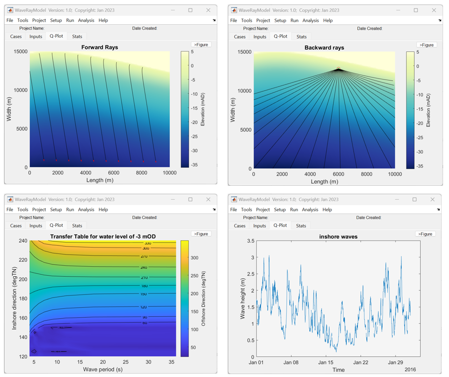

WaveRayModel
The WaveRayModel App is a coastal wave model that uses forward and backward tracking of wave rays (orthogonals to wave crest) over a bathymetric depth grid. In backtracking mode offshore wave spectra can be transformed to inshore points.
Contents
Licence
The code is provided as Open Source code (issued under a BSD 3-clause License).
Requirements
WaveRayModel is written in Matlab™ and requires v2016b, or later. In addition, WaveRayModel requires both the dstoolbox and the muitoolbox
Background
WaveRayModel is a MatlabTM App to examine wave refraction and shoaling over coastal bathymetries. Using a ray tracing method forward and backward tracking rays can be generated for a range of wave periods (frequencies), directions and water levels. Forward tracking provides a spatial visualisation of how waves approach the shore. Backward tracking is used to construct transfer tables that allow inshore wave conditions to be estimated from an offshore timeseries of waves (height, period and direction). Several different definitions of the offshore wave spectrum are provided and depth saturation can also be included (TMA spectrum). The App includes options to plot the offshore and inshore spectrums and the various transfer coefficients as a function of wave period, mean directions and water level. Note, however, that this implementation does not include processes of wave reflection, wave diffraction and wave breaking, although the latter is implicitly captured by including depth saturation using the TMA spectrum.

Manual
The manual provides further details of setup and configuration of the model. The files for the example use case can be found in the example folder here.